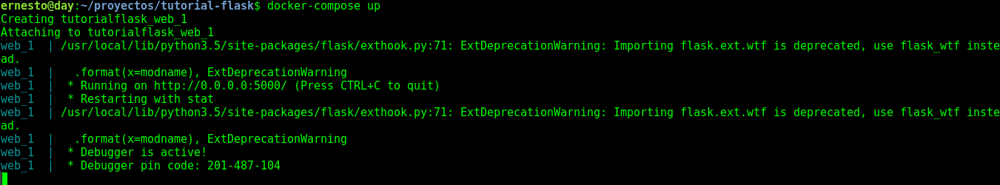
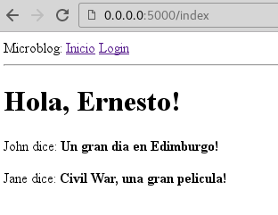
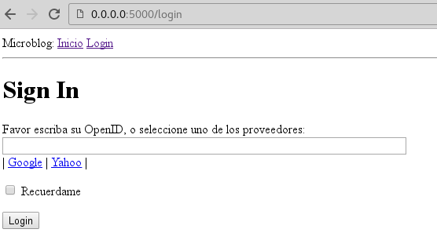
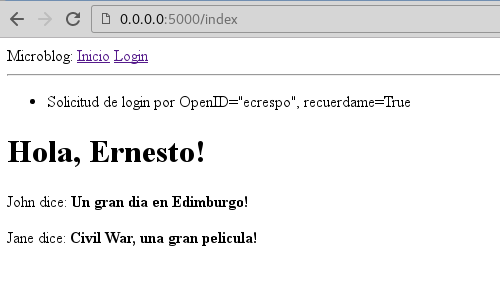

Tutorial de Flask parte 3 (formulario web)
Posted on dom 11 septiembre 2016 in Tutorial Python • 3 min read
Continuando con la serie de artículos sobre tutorial de Flask, basado en los artículos en inglés de Flask by Example y de Flask mega tutorial parte III: web forms.
En este caso se mostrará un formulario con flask.
La estructura de directorios y archivos del proyecto es la siguiente:
tutorial-flask
├── app
│ ├── forms.py
│ ├── __init__.py
│ ├── templates
│ │ ├── base.html
│ │ ├── index.html
│ │ └── login.html
│ └── views.py
├── config.py
├── docker-compose.yml
├── Dockerfile
├── README.md
├── run.py
└── tmp
Los archivos que han tenido cambios son los siguientes:
- views.py: Se agrega el manejo de formulario en la vista.
- config.py: Se agrega el manejo de la seguridad y los proveedores de OpenID.
- forms.py: Es el que maneja la creación del formulario.
- base.html: Se incorpora el enlace de login.
- login.html: Es la página que maneja el ingreso del usuario por un formulario.
Archivo config.py:
#Se habilita el uso de CSRF
CSRF_ENABLED = True
#Se define una clave secreta
SECRET_KEY = 'prueba'
#Se define los proveedores de openid:
PROVEEDORES_OPENID = [
{'name': 'Google', 'url': 'https://www.google.com/accounts/o8/id'},
{'name': 'Yahoo', 'url': 'https://me.yahoo.com'}]
Arhivo forms.py:
#Se importa Form
from flask.ext.wtf import Form
#De form se importa StringField y BooleanField
from wtforms import StringField, BooleanField
#De validadores se importa DataRequired
from wtforms.validators import DataRequired
#Se Crea la clase LoginForm que hereda de Form
class LoginForm(Form):
#Se define el ID como StringField
openid = StringField('openid', validators=[DataRequired()])
#Se define un campo de check para definir si se recuerda el id o no,
#por defecto no.
recuerdame = BooleanField('recuerdame', default=False)
Archivo views.py:
#Se importa render_template, flash y redirect
from flask import render_template, flash, redirect
#Se importa la aplicacion app
from app import app
#De forms.py se importa LoginForm
from .forms import LoginForm
@app.route('/')
@app.route('/index')
def index():
user = {'usuario': 'Ernesto'}
posts = [
{
'autor': {'usuario': 'John'},
'asunto': 'Un gran dia en Edimburgo!'
},
{
'autor': {'usuario': 'Jane'},
'asunto': 'Civil War, una gran pelicula!'
}
]
return render_template('index.html',
title='Inicio',
user=user,
posts=posts)
#Se define login con url /login con metodos GET y POST
@app.route('/login', methods=['GET', 'POST'])
def login():
#Se crea una instancia de LoginForm
form = LoginForm()
#Se consulta si validate existe
if form.validate_on_submit():
flash('Solicitud de login por OpenID="%s", recuerdame=%s' %
(form.openid.data, str(form.recuerdame.data)))
return redirect('/index')
return render_template('login.html',
title='Inicio sesion',
form=form,
providers=app.config['PROVEEDORES_OPENID'])
Archivo base.html:
<html>
<head>
{% if title %}
<title>{{ title }} - Microblog</title>
{% else %}
<title>Microblog</title>
{% endif %}
</head>
<body>
<div>
Microblog: <a href="https://www.blogger.com/index">Inicio</a> <a href="https://www.blogger.com/login">Login</a></div>
<hr />
{% with messages = get_flashed_messages() %}
{% if messages %}
<ul>
{% for message in messages %}
<li>{{ message }} </li>
{% endfor %}
</ul>
{% endif %}
{% endwith %}
{% block content %}{% endblock %}
</body>
</html>
Archivo index.html:
<!-- extend base layout -->
{% extends "base.html" %}
{% block content %}
<h1>Hola, {{ user.usuario }}!</h1>
{% for post in posts %}
<p>
{{ post.autor.usuario }} dice: <b>{{ post.asunto }}</b>
</p>
{% endfor %}
{% endblock %}
Archivo login.html:
<!-- extend base layout -->
{% extends "base.html" %}
{% block content %}
<script type="text/javascript">
function set_openid(openid, pr)
{
u = openid.search('<username>');
if (u != -1) {
// openid requires username
user = prompt('Coloque su' + pr + ' usuario:');
openid = openid.substr(0, u) + user;
}
form = document.forms['login'];
form.elements['openid'].value = openid;
}
</script>
<h1>Sign In</h1>
<form action="" method="post" name="login">
{{ form.hidden_tag() }}
<p>
Favor escriba su OpenID, o seleccione uno de los proveedores:<br>
{{ form.openid(size=80) }}
{% for error in form.openid.errors %}
<span style="color: red;">[{{ error }}]</span>
{% endfor %}<br>
|{% for pr in providers %}
<a href="javascript:set_openid('{{ pr.url }}', '{{ pr.name }}');">{{ pr.name }}</a> |
{% endfor %}
</p>
<p>{{ form.recuerdame }} Recuerdame</p>
<p><input type="submit" value="Login"></p>
</form>
{% endblock %}
Se construye la imagen docker:
docker-compose build
Se corre el contenedor:
docker-compose up
La siguiente imagen muestra el contenedor corriendo:

A continuación se abre el navegador en el siguiente url: http://127.0.0.1:5000 , a continuación se muestra la imagen de la página inicial:

Al darle click al enlace de login se muestra el formulario:

Al colocar el usuario o tomar el de google o yahoo y darle a login se devuelve el usuario y si marco el recordar o no:

El código de este tutorial se encuentra en un repositorio en gitlab en la rama articulo3.
¡Haz tu donativo! Si te gustó el artículo puedes realizar un donativo con Bitcoin (BTC) usando la billetera digital de tu preferencia a la siguiente dirección: 17MtNybhdkA9GV3UNS6BTwPcuhjXoPrSzV
O Escaneando el código QR desde la billetera: